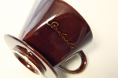
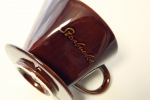

Brewing
Pour-Over

シンプルな抽出器具。場所を取らず、その日の気分に合わせてカップ一杯から淹れることができます。
Coffee Press

コーヒーのオイルもダイレクトに抽出でき、アロマを楽しむことができます。
休日などのゆっくりしたいときや、大切なお客様がいらしたときにオススメの抽出器具です。
Espresso
コーヒーの余韻を楽しめるエスプレッソ。飲んだ後口の中にコーヒーの香りが広がります。
生産地からおいしいコーヒーまで-練習用

シンプルな抽出器具。場所を取らず、その日の気分に合わせてカップ一杯から淹れることができます。
コーヒーのオイルもダイレクトに抽出でき、アロマを楽しむことができます。
休日などのゆっくりしたいときや、大切なお客様がいらしたときにオススメの抽出器具です。
コーヒーの余韻を楽しめるエスプレッソ。飲んだ後口の中にコーヒーの香りが広がります。